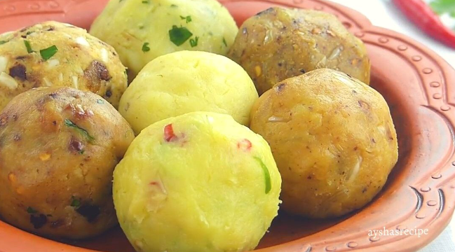

Alu Vorta - আলু ভর্তা

Alu vorta, is a dish made by mashing boiled soft potatoes and mixing chopped chilies, onion, salt and mustard oil. It is usually eaten as a side dish in West Bengal and Bangladesh
Ingredients
- Potatos
- Onion
- Pepper
- Salt
- Mustard Oil
Steps
- First you have to boil the potatoes in a separate pot
- Boiled potatoes should be crushed with the help of hands
- Mix well with fried onion, pepper and mustard oil. Proper amount of salt should be given
Back to Index